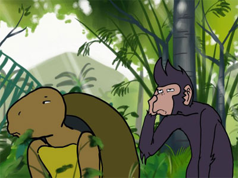

1.Mengenali Ciri Umum Fabel
1. Pengertian Fabel
Secara etimologis fabel berasal dari bahasa latin fabulat. Fabel merupakan cerita tentang kehidupan binatang yang berperilaku menyerupai manusia.
Fabel termasuk jenis cerita fiksi, bukan kisah tentang kehidupan nyata.
Fabel sering juga disebut cerita moral karena pesan yang ada di dalam cerita fabel berkaitan erat dengan moral.
Teks cerita fabel tidak hanya mengisahkan kehidupan binatang, tetapi juga mengisahkan kehidupan manusia dengan segala karakternya.
2. Ciri-ciri Fabel
a) Fabel mengambil tokoh para binatang.
b) Watak tokoh para b natang digambarkan ada yang baik dan ada yang buruk (seperti watak manusia).
c) Tokoh para binatang bisa berbicara seperti manusia.
d) Cerita memiliki rangkaian peristiwa yang menunjukkan kejadian sebab-akibat. Rangkaian sebab- akibat diurutkan dari awal sampai akhir.
e) Fabel menggunakan latar alam (hutan, sungai, kolam, dll).
f) Ciri bahasa yang digunakan (a) kalimat naratif/peristiwa (Katak mendatangi Ikan yang sedang kehujanan, Semut menyimpan makanan di lubang), (b) kalimat langsung yang berupa dialog para tokoh, dan (c) menggunakan kata sehari-hari dalam situasi tidak formal (bahasa percakapan).
3. Penokohan
a) Tokoh: orang/hewan yang menjadi pelaku dalam cerita (tokohprotagonis, atau antagonis, tokoh utama atau tokoh pembantu).
b) Ciri tokoh utama adalah (1) sering dibicarakan; (2) sering muncul; dan (3) menjadi pusat cerita (menggerakkan jalan cerita). Tokoh pembantu adalah tokoh tambahan.
c) Penokohan: pemberian karakter pada tokoh. Karakter bisa bersifat protagonis/yang disukai atau tokoh antagonis/yang tidak disukai.
d) Watak tokoh dapat disimpulkan dari penggambaran fisik, penggambaran tindakan tokoh, dialog tokoh, monolog, atau komentar/narasi penulis terhadap tokoh.
e) Setting atau latar adalah tempat dan waktu kejadian serta suasana dalam cerita. Ada tiga jenis latar, yaitu latar tempat, latar waktu, dan latar sosial.
f) Tema adalah gagasan yang mendasari cerita. Tema dapat ditemukan dari kalimat kunci yang diungkapkan tokoh, atau penyimpulan keseluruhan peristiwa sebab-akibat pada cerita
g) Amanat adalah pesan yang disampaikan penulis secara tidak langsung. Amanat disimpulkan dari sikap penulis terhada permasalahan yang diangkat pada cerita.